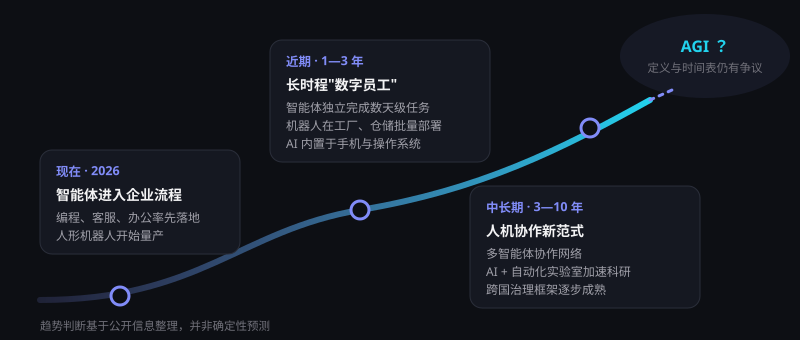

未来展望：下一个十年
预测未来总是困难的，但从当下的技术路线与产业动向中，可以看到一些相对清晰的方向。以下为基于公开信息的趋势判断，并非确定性预言。
路线图：从"能做事"到"做大事"
把六大趋势放在同一条时间线上，可以看到一个清晰的方向：AI 的角色正从"工具"演变为"协作者"，再到深度参与科研与生产的"伙伴"。

支撑这些判断的三个信号
能力在加速：真实代码修复基准的解决率一年内从约 60% 提升到接近 100%；2026 年 9—10 月，新一代旗舰模型集中发布，竞争焦点转向能长时间自主工作的智能体。
需求在爆发：我国生成式 AI 用户在 2026 年上半年突破 7 亿，ChatGPT 周活跃用户达 9 亿；头部模型公司的年化收入已达数百亿美元，AI 不再只是"烧钱"的概念。
投入在加码：2026 年上半年全球 AI 风险投资约 4,300 亿美元，已超过 2025 年全年（安永口径）；我国智能算力同比增长 177%，并提出 2030 年达到 9,800 EFLOPS 的目标；全球人形机器人上半年出货超 2.2 万台。
六大趋势
长时程智能体成为"数字员工"
近期（1—3 年）
智能体可独立完成数小时到数天的任务，在编程、数据分析、运营等岗位中承担完整工作单元。
中长期
多智能体协作网络出现，企业组织形态围绕"人 + 智能体团队"重构，人负责目标、判断与责任。
向通用人工智能（AGI）迈进
近期（1—3 年）
重点补齐"参差不齐"的能力短板：常识、长期记忆、持续学习与可靠性。
中长期
业界对 AGI 的定义与时间表分歧很大。可以确定的是，能力评估与安全研究将与能力提升同等重要。
具身智能规模化
近期（1—3 年）
人形与专用机器人在工厂、仓储、巡检等结构化场景中批量部署，成本持续下降。
中长期
逐步进入商业服务与家庭场景，养老陪护等社会需求可能成为重要驱动力。
科学发现加速
近期（1—3 年）
AI 科研助手普及，文献综述、实验设计与数据分析效率大幅提升。
中长期
"AI + 自动化实验室"形成闭环，在新药、新材料、能源等领域显著缩短研发周期。
AI 成为基础设施
近期（1—3 年）
推理成本持续下降，AI 能力内置于操作系统、手机与办公软件，像搜索一样"无处不在"。
中长期
算力与能源成为国家竞争力的核心要素，绿色算力与能效技术加速发展。
治理体系逐步成熟
近期（1—3 年）
内容标识、安全评估、智能体行为规范等规则逐步落地，企业合规成本上升。
中长期
形成跨国协调的治理框架，在鼓励创新与防范风险之间找到动态平衡。
如何为 AI 时代做准备
成为会用 AI 的人
- 每天在工作中尝试用 AI 完成一件事
- 培养提问、拆解问题与判断结果的能力
- 强化沟通、创造与跨领域整合等"人的优势"
从试点走向重塑
- 围绕业务目标而非技术热点选择场景
- 建设数据底座与 AI 治理制度
- 投资员工培训，重新设计岗位与流程
培养面向未来的能力
- 把 AI 素养纳入课程，教会学生正确使用
- 从考查记忆转向考查思考与创造
- 制定清晰的校园 AI 使用规范